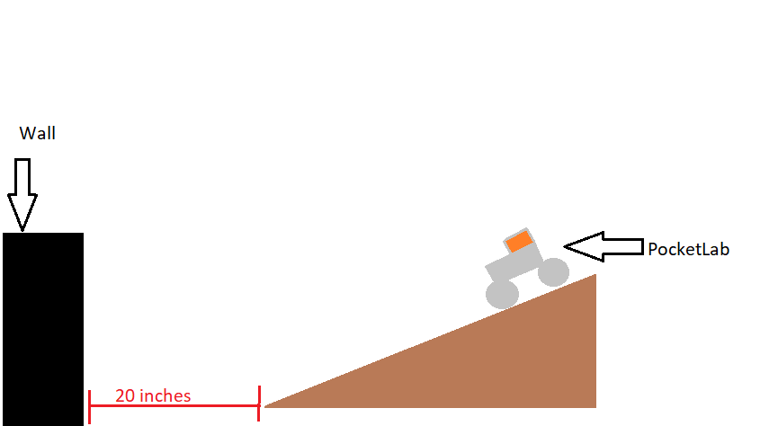
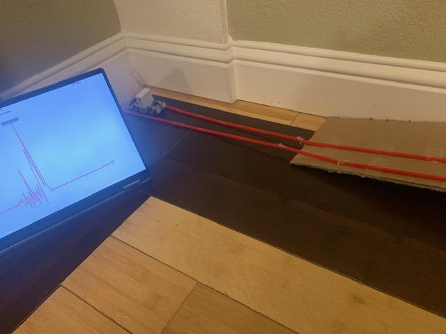
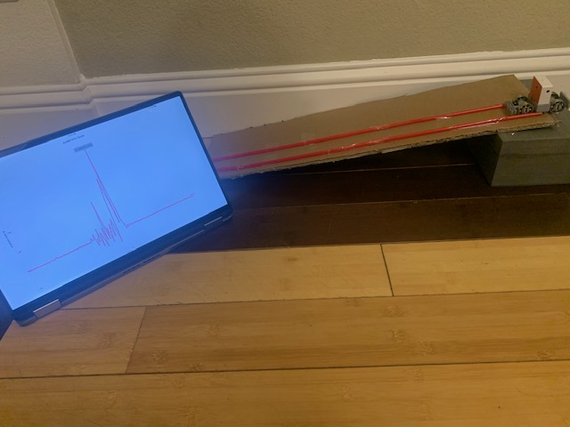
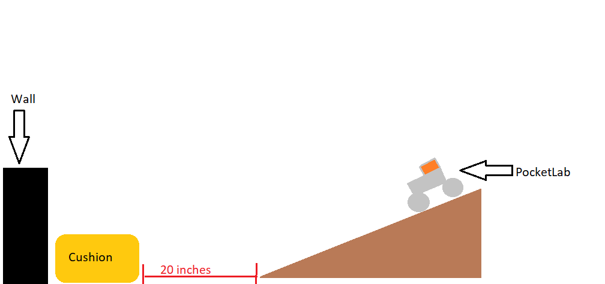
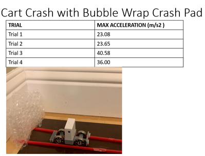
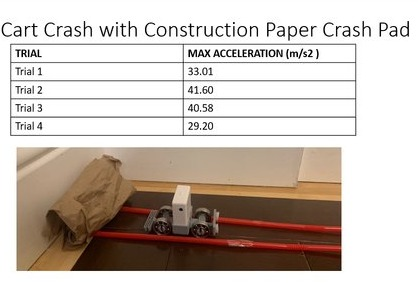
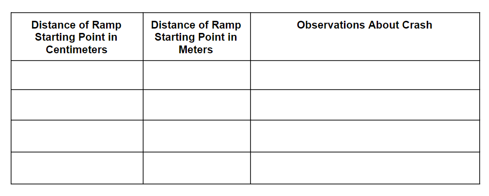

Do It! PocketLab Voyager: Crash Test
 The Challenge
The Challenge
Crash cushions along highways can save lives by reducing the impact force experienced by the passengers in a car crash.
Your challenge is to test how the acceleration of a cart changes with the height of the starting point on a ramp. Then, use the available supplies to build a crash cushion that will reduce the force experienced by a cart as it crashes into the wall.
How should these cushions be built? What materials should be used? How will you determine which crash cushion is the best?
After you complete your experiments, you will create a presentation to share your results and lessons learned.
Project Steps
-
Test Ramp Starting Heights
-
Control Crash
-
Redesign Crash Cushion
-
Changing the Distance
-
Analyzing and Presenting Data
Test Ramp Starting Heights
Converting units of measurement is a skill that is used in many jobs. Contractors, automotive designers, and engineers are examples of people who convert measurements in their profession. For this reason, it is important that you know how to convert between different units of measurement. This activity will provide the practice you need to understand measurement conversions.
The acceleration of the cart will change as the starting height of the ramp changes. You will test four different ramp heights and then choose one height to use during crash cushion testing.
- Set up the ramp.
- Create a track or use the Turbo Track.
- Place the PocketLab Voyager into the cart and make sure it is secure.
- Place the ramp about 50 centimeters from the wall.
- Convert measurements, adjust the ramp, and prepare to record your data. Use the chart below to keep track of your ramp height trials:
Height of Ramp Starting Point in Centimeters Height of Ramp Starting Point in Meters Acceleration of Toy Car
at Impact4.5 centimeters 8.5 centimeters 12.5 centimeters 16.5 centimeters - Open up the PocketLab App and download the power button on your PocketLab Voyager to connect to Bluetooth.
- Sync the PocketLab Voyager to your device, select the Acceleration graph, and change the data rate to the fastest available.
- Begin recording data and release the cart down the ramp.
- Stop the recording.
- Record the results of the first trial in the table. Use cloth or other malleable materials to adjust the height of your ramp for each trial.
- Repeat the trial for each ramp starting point height provided and record the results of each.
- Choose which height you would like to use as a control as you test crash cushion materials. A control is the part of an experiment that does not change. We use controls to help investigate variables in our trials. If the height of the ramp stays the same, we know the ramp is not affecting how the crash cushion materials work.
Control Crash
A control crash is a crash without a crash cushion. A control crash helps you collect good data throughout the experiment by giving you important knowledge to start with. You should perform a control crash before you design or test any crash cushions.

- Now that you have set your ramp to its control height, remember to keep the ramp at the same height and length even after you add your crash cushion. DO NOT MOVE YOUR RAMP.
- Begin recording data and release the cart down the ramp.
- Stop the recording. Did you notice a “spike” in the graph when the car hit the wall?
- Repeat this same test at least 4 times. DO NOT MOVE YOUR RAMP.
- Record the results of each trial in a data table and average the trials.


For every trial of every crash cushion model, you will set up the ramp, crash cushion, wall, and cart with attached PocketLab Voyager in the exact same way.
Design your first crash cushion, then test its effectiveness.
- To collect data, hold your cart at the starting point on your ramp, and press the record button in the PocketLab app.
- Once data starts to appear on screen, release your cart.
- Once the cart has crashed into the crash cushion and has stopped moving, press the stop button to stop recording data.
- Begin recording data for Trial 1.
- Roll the cart down the ramp so it crashes into your crash cushion.
- Stop recording data. Save your data.
- Find and record the Trial Result.
- Repeat steps for Trials 2 and 3.
- Record any overall observations, including what the crash looked like.

What did you notice? What worked and what didn't work? How could you make your crash cushion better?
Design the next crash cushion and test. What did you notice? What worked and what didn't work? How could you make your crash cushion better?
Redesign Crash Cushion
By running many trials and comparing with control results, you can get a very good idea of the effectiveness of each crash cushion design. Once you have this information, you can improve your designs to be even safer and more effective.
- Before building, draw out your new crash cushion design.
- Explain the choices that went into your design.
- Construct your crash cushion model.
- Test your crash cushion model.
- Record your results in a data table. Be sure your table is properly labeled for the correct model.
- Conduct at least four trials for each model.
- After testing each model, explain whether or not the design was effective.
 
Changing the Distance
Now that you have tested the crash cushions, move the ramp to see if the distance the cart travels affects the crash cushion. Pick the crash cushion that worked the best on your cart. Keep the height of your ramp the same.
- In this experiment, the height of the ramp and the crash cushion are used as a control, meaning they both stay the same.
- Place the ramp at different distances from the crash wall.
- Convert these measurements into meters so it is in the standard unit of measurement.
- Create a chart with the labels below and record your observations.
- You will pick 4 different distances (measured in centimeters) to place your ramp.
- You will then test your cart and make observations about the crashes.
- Write a final conclusion about what you observed while testing.

Analyzing and Presenting Data
Use a presentation tool like PowerPoint or Google Slides to create a presentation demonstrating which of your designs was most effective at making the optimal crash cushion and why.
Be sure to include:
- A picture of your optimal crash cushion
- Your data, graphs, and other experimental results
- Photos or movies of your experiment in action
- Your observations during the experiment(s)
- What you learned from the experiment(s)
- Explain the decisions that went into the design of the crash cushion